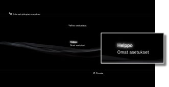
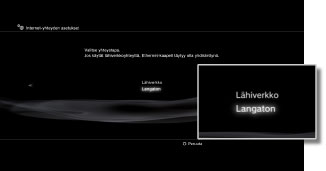
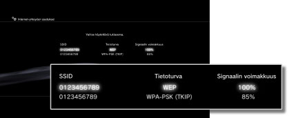
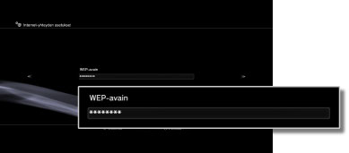

Internet-yhteyden asetukset (langaton yhteys)
Tätä toimintoa voi käyttää vain PS3™-järjestelmissä, joissa on langaton lähiverkkotoiminto.
Valitse tapa, jolla Internet-yhteys muodostetaan. Internet-yhteyden asetukset määräytyvät käytössä olevan verkkoympäristön ja käytössä olevien laitteiden mukaan. Seuraavissa ohjeissa kerrotaan, miten langaton Internet-yhteys yleensä muodostetaan.
1. |
Tarkista, että tukiaseman asetukset on määritetty
Tarkista, että järjestelmän lähellä on tukiasema, joka on kytketty verkkoon, jossa on Internet-yhteys. Tukiaseman asetukset määritetään yleensä tietokoneessa. Saat lisätietoja henkilöltä, joka määritti tukiaseman asetukset tai ylläpitää sitä.
|
2. |
Varmista, että Ethernet-kaapelia ei ole liitetty PS3™-järjestelmään.
|
3. |
Valitse  (Asetukset) > (Asetukset) >  (Verkkoasetukset). (Verkkoasetukset).
|
4. |
Valitse [Internet-yhteyden asetukset].
Kun näyttöön tulee vahvistus Internet-yhteyden katkeamisesta, valitse [Kyllä].
|
5. |
Valitse [Helppo].

|
6. |
Valitse [Langaton].

|
7. |
Valitse [Haku].
Näyttöön tulee luettelo PS3™-järjestelmän kantaman sisäpuolella olevista tukiasemista.
Joissakin PS3™-järjestelmän malleissa valinta [Automaattinen] voi olla käytettävissä. Valitse [Automaattinen], kun käytät tukiasemaa, joka tukee automaattista määritystä. Tarvittavat asetukset määritetään automaattisesti, jos seuraat näytön ohjeita. Ota yhteyttä paikalliseen jälleenmyyjään, jos haluat lisätietoa tukiasemista, jotka tukevat automaattista määritystä.
|
8. |
Valitse tukiasema, jota haluat käyttää.
Tukiasemiin liitetään SSID-tunnistusnimi. Jos et tiedä, mitä SSID-tunnusta sinun tulisi käyttää tai jos SSID-tunnusta ei näy näytössä, ota yhteys henkilöön, joka on määrittänyt kyseisen tukiaseman tai jonka tehtävänä on sen ylläpitäminen.

|
9. |
Tarkista tukiaseman SSID-tunnus.
|
10. |
Valitse käytettävät turva-asetukset.
Tarvittavat turva-asetukset määräytyvät käytössä olevan tukiaseman mukaan. Jos tarvitset lisätietoja oikeiden asetusten valitsemiseksi, ota yhteys henkilöön, joka on määrittänyt tukiaseman tai joka ylläpitää sitä.

|
11. |
Kirjoita salausavain.
Salausavain näkyy näytössä merkkeinä [*]. Jos et tiedä salausavainta, ota yhteyttä henkilöön, joka määritti tukiaseman asetukset tai ylläpitää sitä.

Kun olet kirjoittanut salausavaimen ja vahvistanut verkkoasetukset, näyttöön tulee asetusten luettelo.
Käytössä olevasta verkkoympäristöstä riippuen saattaa olla tarpeen määrittää esimerkiksi PPPoE-, välityspalvelin- tai IP-osoitelisäasetuksia. Lisätietoja tällaisista asetuksista on Internet-palveluntarjojan tarjoamissa tiedoissa tai verkkolaitteen mukana toimitetuissa ohjeissa.
|
12. |
Tallenna asetukset.
|
13. |
Testaa yhteys.
Kun valitset [Tarkista yhteys], järjestelmä yrittää muodostaa Internet-yhteyden.
|
14. |
Vahvista yhteystestin tulokset.
Jos yhteyden muodostaminen onnistui, verkon tiedot näytetään.
|
Vihjeitä
- Jos yhteydessä on ongelmia, tarkista asetukset näytössä näkyvien ohjeiden mukaan. Lisätietoja on myös Internet-palveluntarjoajan toimittamassa materiaalissa ja käytettävän verkkolaitteen käyttöohjeessa.
- Jos yrität muodostaa yhteyden välittömästi sen jälkeen, kun olet valinnut vaiheessa 7 asetukseksi [Automaattinen] > [AOSS™], reitittimen asetukset eivät ehkä ole vielä valmiit ja yhteyttä ei voi muodostaa. Odota 1 - 2 minuuttia, ennen kuin yrität muodostaa yhteyttä.